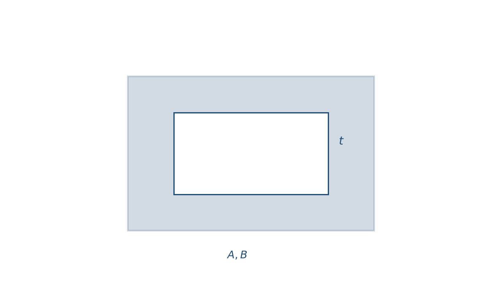
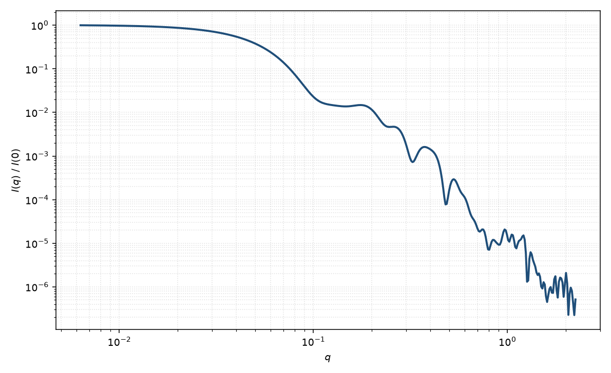

空心矩形棱柱
hollow rectangular prism
适用场景
外壁为矩形棱柱、内腔充满溶剂（或与溶剂衬度相同的介质），壁厚 $t$ 有限。适用于空心纳米框、管状矩形截面粒子、以及核被溶剂化掏空的砖块。
壁很厚、内腔很小时接近实心矩形棱柱；壁很薄时改用薄壁极限，避免 $t$ 与衬度强相关。圆管应改用空心圆柱。
物理图像
振幅是外砖块减去内砖块（内边长 $A-2t$ 等）。取向平均与矩形棱柱相同。空腔引入额外干涉，中间 $q$ 可出现相对实心柱移动的极小；高 $q$ 由壁的厚度与棱角共同决定。
若内外壁衬度不同（涂层管），回到核壳平行六面体并把核 SLD 设为溶剂以外的值。
示意图


核心公式
$$A(\mathbf{q})=\Delta\rho\bigl[V_{\mathrm{out}}F(A,B,C;\mathbf{q})-V_{\mathrm{in}}F(A-2t,B-2t,C-2t;\mathbf{q})\bigr],$$$t$ 须满足 $A,B,C>2t$。粉末平均 $P(q)\propto\langle|A|^2\rangle$。体积差 $V_{\mathrm{out}}-V_{\mathrm{in}}$ 是壁的实体积。
参数表
| 参数 | 符号 | 含义 | 单位 | 典型范围 |
|---|---|---|---|---|
| 外边长 | $A,B,C$ | 外轮廓三棱全长 | Å 或 nm | 20–1500 Å |
| 壁厚 | $t$ | 各面内缩的均匀厚度 | Å 或 nm | 3–80 Å |
| 衬度 | $\Delta\rho$ | 壁相对溶剂（内腔）SLD 差 | Å$^{-2}$ | 组成决定 |
| 取向角 | $\theta,\phi$ | 棱柱轴与截面方位（二维） | 度 | 由取向分布约束 |
| 标度 / 本底 | $\mathrm{scale}$, $B$ | 前置因子与本底 | 与强度单位一致 | 实验相关 |
拟合注意
$t$ 与 $\Delta\rho$ 在薄壁时几乎不可分：绝对强度标定或已知组成才能放开两者。多分散优先放在外边长；壁厚分布会进一步抹平中 $q$ 干涉。
取向同矩形棱柱。磁性：若只有壁磁化，磁形式因子接近空心几何；核（空腔）无核磁 SLD。可辨识性：未见中 $q$ 干涉时，空心与“更小的实心柱 + 本底”易混淆。
相近模型
参考文献
- Nayuk, R.; Huber, K. Formfactors of hollow and massive parallelepipeds and their application to SAXS. Z. Phys. Chem. 2012, 226, 837–854.
- Mittelbach, P.; Porod, G. Zur Röntgenkleinwinkelstreuung verdünnter kolloider Systeme. VII. Acta Phys. Austriaca 1961, 14, 185–211.